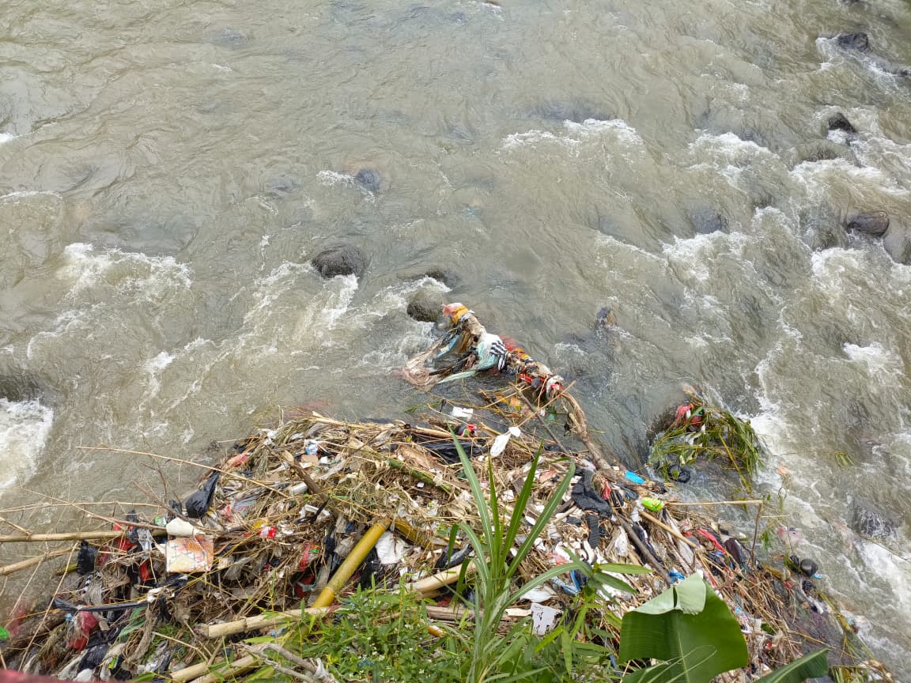

Pencemaran Air

Terlihat gundukan sampah yang sangat besar di pinggiran sungai, yang terdiri dari berbagai jenis limbah seperti plastik, kain, potongan bambu, dan sampah rumah tangga lainnya. Sampah-sampah ini terjebak di vegetasi tepi sungai, membentuk tumpukan yang menyumbat aliran alami.
erlihat gundukan sampah yang sangat besar di pinggiran sungai, yang terdiri dari berbagai jenis limbah seperti plastik, kain, potongan bambu, dan sampah rumah tangga lainnya. Sampah-sampah ini terjebak di vegetasi tepi sungai, membentuk tumpukan yang menyumbat aliran alami.
Air sungai terlihat berwarna cokelat keruh dengan arus yang cukup deras. Kekeruhan ini tidak hanya berasal dari sedimen tanah, tetapi kemungkinan besar diperparah oleh kontaminasi limbah organik dan non-organik yang terurai di dalam air. Sampah plastik yang terbawa arus sungai dapat terpecah menjadi mikroplastik yang berbahaya bagi ikan dan organisme air lainnya. Selain itu, tumpukan sampah ini juga mengganggu estetika dan fungsi sungai sebagai saluran air yang sehat.